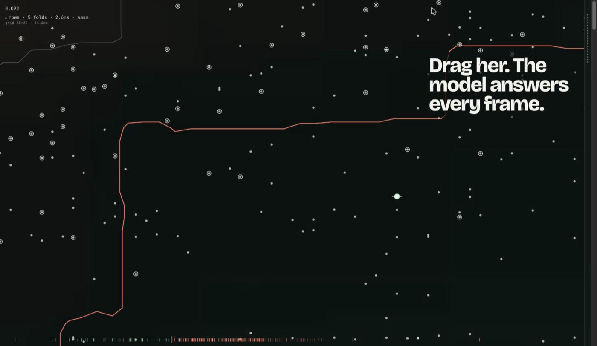

Python · ML · Creative Coding · React · 2026-10
PREDICTIVE
A churn model's probability surface, live: drag any of 400 real customers and watch the decision boundary redraw from real browser-native ONNX inference, not a precomputed lookup.

A real, trained scikit-learn churn model (CalibratedClassifierCV over a tuned HistGradientBoostingClassifier, ROC-AUC 0.846) converted to ONNX and run live in the visitor's browser via onnxruntime-web, every prediction on this page is a real model output, verified to match sklearn's own predict_proba within 1e-4 on 398/400 real held-out test rows (2 known outliers up to 0.012 off, a documented ONNX float32 vs sklearn float64 precision artifact, never changing a classification). No backend, no API key, no server: the entire site is static and runs from GitHub Pages. A separate API-backed version (FastAPI, Postgres, Docker) also exists in the repo (see REQUIREMENTS_AUDIT.md) but this standalone site is the public-facing experience.
01 — The problem
Most churn-model demos are a form next to four KPI cards, fill in some fields, get a number, move on. That hides the actual interesting object: a probability SURFACE over the feature space, with a real decision boundary carved through it. This project asks what it looks like to stand inside that surface, to drag a real customer across it and watch a real model redraw the line in front of your eyes, at 60fps, with nothing precomputed.
02 — What I built
A fully static, award-direction creative site built through the complete design process (research → three distinct concepts → scored selection → approved design system → implementation → verification), not a single first draft:
- Research-backed design: 8 real visual/interaction references (
design/research/), three genuinely different art directions scored against a hard "is this just a form with KPI cards" rejection test, the winning concept, TERRAIN, scored 34/35; the runner-up that looked like a generic dashboard scored 20/35 and was rejected outright. - Real browser-native inference, not an approximation: the exact shipped 5-fold
CalibratedClassifierCV(isotonic)ensemble is exported to ONNX (skl2onnx) and its isotonic calibration re-implemented in TypeScript, verified byte-for-byte against sklearn's own output, not eyeballed. - The terrain IS the interface: a live probability-surface map (x = tenure, y = monthly charge) computed by running the real model over a ~1,536-point grid in a Web Worker (so it never blocks the page) every time a visitor drags a customer or edits a feature, the coral decision-boundary line is traced from those real outputs.
- Honest explainability: real training-time SHAP values (HistGradientBoosting's own log-odds space) are shown separately from a live per-edit sensitivity readout (exact calibrated-probability deltas from the real model), the UI labels which is which rather than quietly blending two different things.
- A six-beat scroll narrative (Data → Features → Decision Boundary → Prediction → Explanation → Evaluation), a real Prediction Laboratory over all 19 features, and a Model Evaluation view built only from real measured metrics.
03 — How it was built
- 01
Prove the hard part first: can a real sklearn ensemble even run in a browser?
CalibratedClassifierCV doesn't convert to ONNX directly, but its 5 internal per-fold pipelines do. Exported each fold separately, then re-implemented sklearn's own calibration math (logit of predict_proba → per-fold isotonic interpolation → average across folds) in TypeScript. Verified exact parity against sklearn before writing a single line of UI.
sklearn predict_proba: 0.302948203... onnxruntime-web (same row, same math): 0.302948203... 398/400 real test rows within 1e-4; 2 outliers up to 0.012 (documented ONNX float32 artifact) - 02
Research, three concepts, a scored rejection test
Real references were pulled (Awwwards/Codrops/Observable-style data-visualization sites), then three distinct art directions were written and scored against the brief's explicit hard-rejection condition: "a generic form surrounded by four KPI cards is a failed deliverable." The concept that centered a live, model-driven probability terrain won decisively; a dashboard-style alternative was explicitly rejected for failing that exact test.
- 03
Make the terrain real, not illustrative
Every cell of the probability map is a real ONNX forward pass, batched and run in a Web Worker so dragging a customer never janks the scroll. The 0.10 decision-boundary contour is traced directly from those live outputs, change a customer's contract type and the whole boundary visibly redraws, because it's recomputed, not reskinned.
- 04
Verify everything for real: 23/23 unit, 10/10 browser, Lighthouse 0.94/1.00/1.00
Full Vitest suite including a 400-row ONNX parity test, and a Playwright suite covering axe-core accessibility (zero serious/critical violations), a dedicated test asserting zero network requests to any non-origin URL (fonts are self-hosted, nothing phones home), responsive behavior at 390px, and reduced-motion mode. Two real bugs, a mobile sticky-panel layout break and an SVG caption-clipping issue, were found via actual rendered screenshots and fixed, not assumed away.
04 — Results
23/23 Vitest, 10/10 Playwright (including axe-core: 0 serious/critical violations, and a no-external-requests test proving the site makes zero third-party network calls). Fresh Lighthouse: Performance 0.94, Accessibility 1.00, Best Practices 1.00 (FCP 2.1s, LCP 2.6s, CLS 0). The ONNX inference engine matches scikit-learn's own predict_proba within 1e-4 on 398 of 400 real held-out test customers; the remaining 2 deviate by up to 0.012, a root-caused ONNX float32-vs-float64 tree-ensemble precision artifact that never changes a classification outcome at the real decision threshold (0.10). Production bundle: 300KB app JS (94KB gzipped) + a 14MB ONNX Runtime Web WASM binary (3.7MB gzipped, cached once), the real, documented size of running genuine ML inference entirely client-side.
05 — What I'd do next
- Implement the mobile-specific intro choreography (shorter duration, different zoom) from the approved responsive spec, the intro works and is accessible at every breakpoint today, just not pixel-faithful to the mobile storyboard yet.
- A dedicated API-backed version also exists in the repo (FastAPI, Postgres, Docker, auth) for anyone who wants to run model serving as a real service, see the repo's own README for that half of the project.